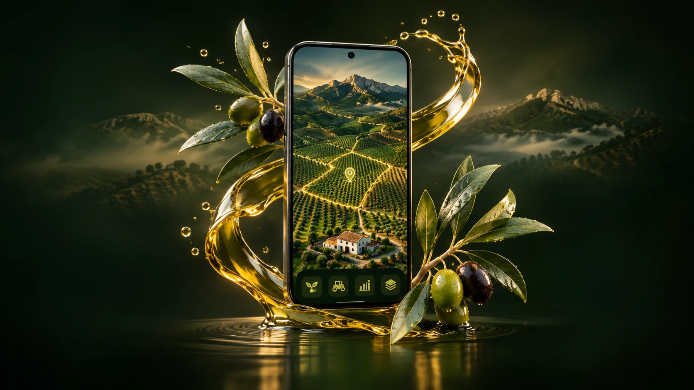

01 / 03
Tu tierra, bien organizada.
Fincas, parcelas y recintos. Una visión clara de tu explotación, desde cualquier lugar.
El campo, tus parcelas y cada campaña. Todo conectado en Mágina Olivo.
Descubre Mágina OlivoUN CAMPO CON HISTORIA. UNA NUEVA FORMA DE TRABAJAR.

01 / 03
Fincas, parcelas y recintos. Una visión clara de tu explotación, desde cualquier lugar.
02 / 03
Registra labores, tratamientos y cosecha. Lleva el control de lo que ocurre en el campo.
03 / 03
Tu información ordenada para consultar historiales y preparar documentación cuando la necesites.
Diseñada para quienes conocen cada árbol, cada parcela y cada campaña.
Demostración visual: el registro y la descarga se activarán cuando haya un destino verificado.